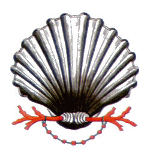

|

SCAMBIO DI CAVALLI
Testi tratti da una pagina del sito www.nobilecontradadelnicchio.it.
Divertentissimo quello che successe in occasione della tratta dei cavalli pel Palio di Agosto del 1785.
Nel pomeriggio del giorno 13 (allora la tratta si effettuava nelle ore pomeridiane) la solita folla di contradaioli assisteva rumorosa alle operazioni del sorteggio.
Già otto cavalli erano stati assegnati ad altrettante Contrade; due soli ne rimanevano nell'urna, il numero 2 ed il numero 7.
Le speranze degli appassionati erano tutte concentrate sul numero 2, un baio buon corridore, forse il migliore di quella scelta.
Accompagnato da un urlo di gioia ecco che viene estratto dall'urna delle Contrade il biglietto del Nicchio.
Da quella dei cavalli esce poi il malaugurato numero 7, il numero di uno stornello, unaninemente riconosciuto buono a nulla. Ma il barbaresco del Nicchio fece lo gnorri ed invece di prendere lo stornello prese per distrazione il baio numero 2 e via, di corsa, in Contrada seguito da un lungo codazzo di Nicchiaioli che avevano mangiato... la foglia.
Naturalmente quelli dell'Istrice, sapendo di dover avere il numero 2, nel vedersi consegnare la brenna di numero 7 cominciarono a protestare violentemente, reclamando il cavallo che la sorte aveva loro assegnato.
Le autorità non ebbero possibilità di risolvere per il momento la questione, ragion per cui i buoni Istriciaioli pensarono di precipitarsi furenti nel Rione del Nicchio.
Le accoglienze non furono certamente cortesi se, come dice il cronista, quei del Nicchio, ricordandosi del detto "sono del Nicchio arrivo e picchio" non solo cacciarono quelli energumeni con brutte parole, ma li minacciarono anche di legnate.
Intanto in piazza le cose non andavano per le buone e regnava una grande agitazione per questo modo di agire dei Nicchiaioli ed i commenti salivano al cielo.
Il barbaresco dell'Istrice poi risolse per conto suo la questione; levò "il brigliozzo del suo cavallo e lo mandò alla ventura nel mezzo della piazza".
La povera bestia errò spaventata nel Campo finché "per ordine del Governo non fu presa e messa nel Corpo di Guardia".
Quietato alla meglio il tumulto, il tenente di polizia accompagnato dai Deputati di Biccherna, che sopraintendevano alla corsa, si recò nel Nicchio facendo presente che era tempo di finirla ed intimando la consegna del cavallo dell'Istrice.
La polizia e quei di Biccherna non ebbero però migliore resultato degli Istriciaioli. Sembra che i nostri avi fossero alquanto ostinati; non ci fu verso di convincerli e polizia ed autorità ritornarono indietro a mani vuote.
La sera stessa, dopo il coprifuoco, il tenente di polizia, solo, ritornò nel Nicchio con un ordine scritto del Governo che intimava la riconsegna del cavallo.
La cosa cominciava a farsi piuttosto grossa ed i Nicchiaioli pensarono che era meglio rassegnarsi. Ma lo fecero con somma arte, restituendo il cavallo dietro promessa che la riconsegna non avrebbe pregiudicato la questione sull'appartenenza dell'animale.
La questione rimaneva sempre aperta ed in attesa di definitiva soluzione. Infatti il tanto contestato baio anziché nell'Istrice fu portato nel Corpo di Guardia dove già si trovava l'altro cavallo!
Furono così quelle bestie innocenti che ne andarono di mezzo perché passarono tutta quella notte e parte della mattinata successiva in prigione.
Il giorno dopo fu deciso in Comune a chi spettasse il cavallo baio ed intanto che durava il dibattito la prova fu corsa con otto cavalli.
Dopo la prova fu deciso che il baio spettava all'Istrice e lo stornello al Nicchio e tutto finì come doveva finire.
Il giorno 16 fu corso il Palio. Fece cappotto la Lupa col fantino Pacchiano.
|